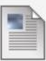

Assignment 5
Attached Files:
Homework8.png (45.086 KB)
Step 1
Make a page called Assignment5.html with the
standard code template and upload to the Week-4
directoty.
Write the html that will recreate the page shown in the
attached pdf file.
Step 2
Edit your index.html in the root directory of your web
account and add a relative link to your homework file